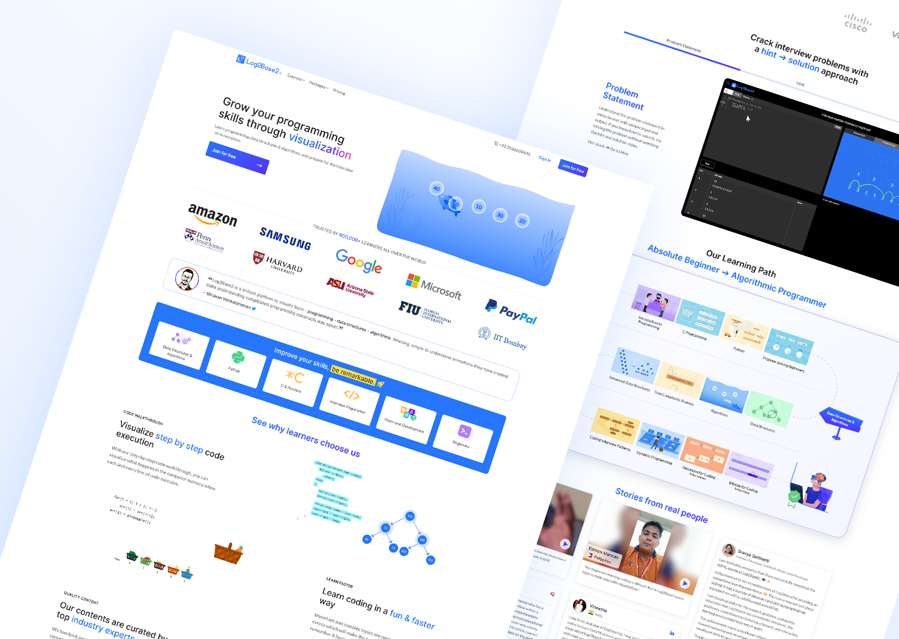
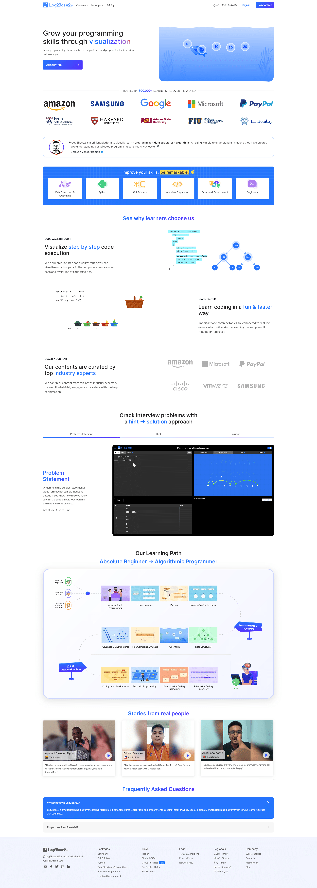

End-to-end UX design and SVG animation system for the Log2Base2 learning platform.
Adobe XD | Photoshop | SVGator
Log2Base2 is a visual programming education platform that teaches computer science concepts through animation and interactive content. As part of the product leadership team, I was responsible for the complete UX design of the platform — from high-level information architecture to screen-level interaction design. This project also included the creation of a custom SVG illustration and animation system, where each animated asset was purpose-built in SVGator to reinforce a specific programming concept inline on the page.
Log2Base2's core promise is visual learning — but the platform's UI wasn't living up to that promise. Static screens with disconnected components made the experience feel fragmented and generic, undercutting the product's differentiation. The design needed to merge structured UX principles with motion and animation in a way that felt intentional, not decorative. Every animated element had to serve the learning objective of the page it lived on, and the overall system had to remain coherent and performant across a large content library.
As a senior designer on the product leadership team, I owned the full design scope — user flow architecture, wireframing, high-fidelity UI in Adobe XD, and all SVG asset production. I designed and animated six custom SVGs using SVGator, each mapped to a specific concept section on the platform: homepage overview, code interaction, visual learning, problem-solving, hints, and solution walkthroughs. I collaborated with front-end developers throughout to ensure animation performance and cross-browser compatibility.
The UX system was built on a consistent grid and component library that could scale across the platform's growing content catalogue. SVG animations were chosen over video to keep file sizes low and maintain design control at any screen size. Each animation was looped and timed to draw attention without distracting — subtle enough to feel like part of the interface, impactful enough to explain the concept without a word of copy. The final design system gave developers a clear, component-level spec for implementation.

Six custom SVG animations were designed and built in SVGator, each tied to a specific learning concept on the platform. Rather than using generic stock illustrations, every asset was drawn and animated from scratch to match the platform's visual language and communicate its assigned concept clearly — without relying on text labels.
The final UX design integrates all screens, components, and SVG animations into a unified platform experience. The design reflects a visual-first philosophy — every layout decision prioritises clarity of concept over density of content, ensuring learners at any level can navigate and engage without friction.
The completed design system and animation suite were implemented across the Log2Base2 platform and contributed to a 35% increase in engagement with visual and animated content. The SVG animation approach was adopted as the standard for new concept pages, and the component library established in this project became the foundation for all subsequent platform design work.

←Back